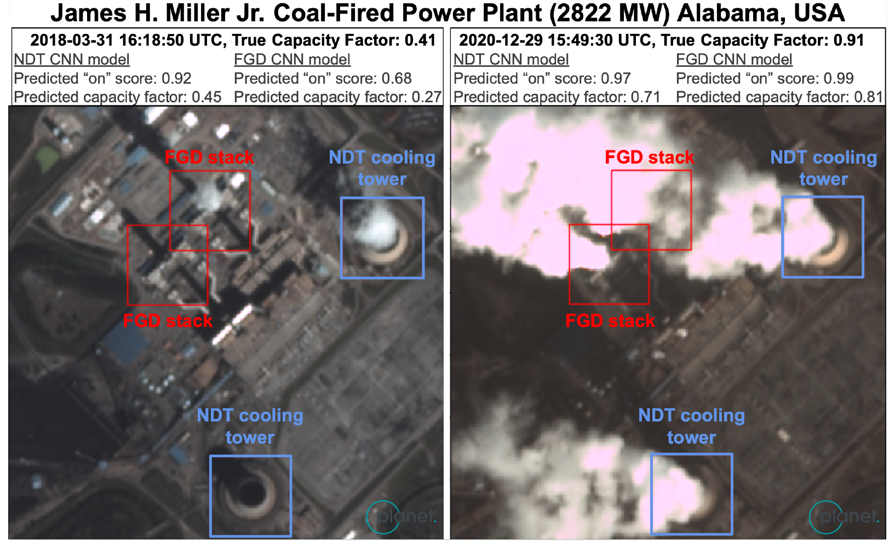
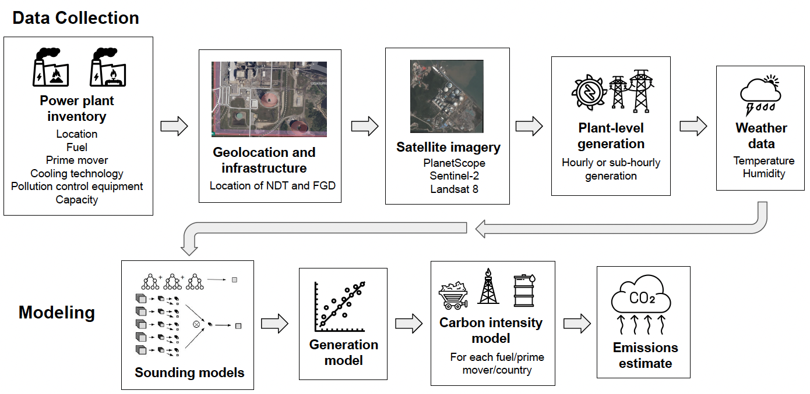
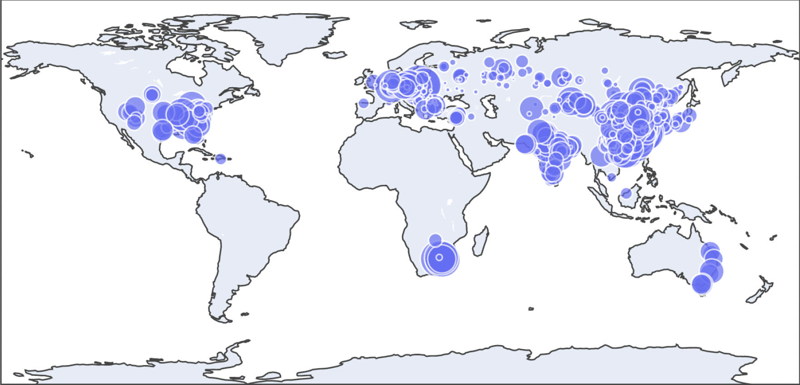

Indirect Estimation of Facility-level CO\(_2\) Emissions from Water Vapor Plumes
- Couture, H. D. et al., Estimating Carbon Dioxide Emissions from Power Plant Water Vapor Plumes Using Satellite Imagery and Machine Learning, Remote Sensing 2024, 16, 1290.
- Transition Zero Tech Team, Estimating Coal Power Plant Operation from Satellite Images with Computer Vision.
Context
During the years 2015–2020, the energy sector emitted between 33–37 gigatons of CO\(_2\) annually, amounting for about 76% of global greenhouse gas (GHG) emissions. Of these, fossil fuel combustion for electricity generation alone accounted for 15 gigatons of CO\(_2\) per year. Minimizing power plant carbon footprints necessitates meticulous GHG emissions monitoring.
Measurements of CO\(_2\) emissions from combustion power plants have often relied on bottom-up estimates based on emission factors, the type of fuel, the mass of fuel burnt, and the fuel efficiency. Such estimates, though straightforward, tend to be frequently inaccurate and vary in temporal granularity from one power plant to the next. In contrast, continuous emissions monitoring systems (CEMS) deployed in some power plants in the Global North enable reliable emissions tracking at hourly or sub-hourly temporal resolutions. However, CEMS are costly to install, calibrate, and maintain, making their mass deployment difficult.
With a need for standardized global emissions monitoring, Climate TRACE members WattTime and Transition Zero have turned to remote sensing as a means to derive plant-level CO\(_2\) emissions. Here, I summarize the efforts of Couture et al. (2024) who trained machine learning models to predict power plant capacity factors from multispectral satellite images. Building upon past work by Transition Zero members, these models rely on detecting water vapor plumes from coolant towers as a proxy for plant activity.
The capacity factor of a power plant is defined as the ratio of its instantaneous power generation to its reported maximum capacity. Hence, by definition, the capacity factor is a real number in the range [0, 1].
Methodology
Two primary sources of water vapor plumes from combustion power plants are natural draft cooling towers (NDT) and wet flue gas desulfurization (FGD) stacks. NDTs are large hyperbolic structures where water vapor forms via evaporative cooling. Meanwhile, FGD stacks are narrow chimneys, allowing flue gas to become saturated with water after desulfurization.

Figure 1 of Couture et al. (2024): Location predictions of NDT (blue) and FGD (red) units in PlanetScope images of the James H. Miller Jr. power plant on two days with different levels of activity. Couture et al. (2024) trained separate convolutional neural nets for NDT and FGD detection.
The above figure shows examples of NDT and FGD stacks in 3-meter resolution PlanetScope imagery. NDT plumes are generally larger and wider than FGD plumes, making them easier to see in multispectral satellite imagery.
Data: Couture et al. (2024) partnered with Global Energy Monitor to build a comprehensive inventory of combustion power plants operational as of June 1, 2023. Power plant data presented in this inventory include the following features.
- Accurate power plant coordinates
- Locations of NDT and FGD units in power plants
- Weather (temperature and humidity) data local to power plants
- Power plant attributes such as the type of fuel, the cooling technology adopted, and any air pollution control equipment in use
- Power plant maximum capacity
- Time series of electrical energy generation at various power plants
- Fuel and prime mover (steam or gas turbine) type to estimate the emissions factor (or carbon intensity) measured in kg of CO\(_2\) per MWh of electrical energy
Couture et al. (2024) specified, in Section 3.4 of their paper, certain custom filters to select viable power plants for subsequent modeling. For every power plant that passed their filters, they downloaded multispectral satellite imagery from three data sources: PlanetScope (3 m resolution, daily revisits), Sentinel-2 (10 m resolution, 5-day revisit rate), and Landsat 8 (30 m resolution, 16-day revisit rate). They then matched each satellite image to a capacity factor determined from the plant capacity and the electrical power generated by the plant at the time stamp closest to that of the image.
To ensure reasonable matches of satellite images to capacity factors, Couture et al. (2024) required that all plants in their training data have electrical power generation data available at least hourly cadence. This restriction limited their training data to combustion power plants in the US, Europe, and Australia. Their validation data set included power plants in India and Turkey in addition to ones in the US, Europe, and Australia. Finally, model inference was performed on 1042 power plants across 41 countries, including several plants in countries with high emissions such as China, US, India, Russia, and Japan.

Figure 2 of Couture et al. (2024): Summary of the data and machine learning workflow implemented to output plant-level CO\(_2\) emissions from multispectral satellite imagery.
Models and Inference:
- Sounding models for capacity factor estimates from satellite imagery: XGBoost, convolutional neural networks with attention-based pooling
- Couture et al. (2024) implemented separate sounding models for NDT and FGD detection.
- Further, they trained separate models on PlanetScope, Sentinel-2, and Landsat 8 images.
- A naive object detection model that predicts an NDT or FGD unit to be always on has a mean average precision (mAP) of 0.5.
- A naive regression model that always predicts a constant value equal to the mean capacity factor of the training data set has a root mean-squared error (RMSE) of 0.34 and a mean bias error (MBE) of 0 for both NDT and FGD.
| Task | Description | Test metric(s) |
|---|---|---|
| Object detection | Localize NDT and FGD units in satellite images of power plants, and determine if these units are on or off. | mAP of NDT/FGD unit activity |
| Regression | Estimate a capacity factor for every detected NDT/FGD unit. | RMSE and MBE on unit capacity factor estimates |
Consider targets \(\{y_i\}_{i=1}^n\) and model predictions \(\{\widehat{y_i}\}_{i=1}^n\). The root mean-squared error and the mean bias error between the target and the prediction are respectively given by: \[\begin{align} \mathrm{RMSE} &= \left( \frac{1}{n-1} \right) \sqrt{\sum_{i=1}^{n} (y_i - \widehat{y_i})^2}, \\ \mathrm{MBE} &= \left( \frac{1}{n} \right) \sum_{i=1}^{n} (y_i - \widehat{y_i}). \end{align}\]
- Generation models (L1-regularized linear regression) aggregate unit level capacity factor estimates from the sounding models to derive time-averaged unit- and plant-level capacity factor values.
\[\begin{align} \mathrm{Annual \ average \ unit \mbox{-} level \ power \ generation} = \ &\left({\rm Hourly \ capacity \ factor} \right) \times \\ &\left({\rm Maximum \ capacity \ of \ unit} \right) \times \\ &({\rm No. \ of \ hours \ in \ a \ year}). \end{align}\]
\[\begin{align} \mathrm{Annual \ average \ unit \mbox{-} level \ emissions} = \ &{\rm Carbon \ intensity (fuel \ type, prime \ mover, \ country)} \times \\ & \mathrm{Annual \ average \ unit \mbox{-} level \ power \ generation}. \end{align}\]
The annual average CO\(_2\) emissions of a power plant are finally obtained through a weighted sum of emissions estimates from its constitutent NDT and FGD units.
Key Results
- Couture et al. (2024) used machine learning to estimate CO\(_2\) emissions for 1042 facilities, representing 3% of combustion power plants globally but accounting for about 32% of CO\(_2\) emissions from all combustion power plants during the years 2015–2022.

Figure 6 of Couture et al. (2024): Map of CO\(_2\) emissions estimated for 1042 power plants using machine learning. Each circle represents a single power plant, with the size of the circle proportional to the estimated plant-level CO\(_2\) emission during the year 2022.
All machine learning models developed by Couture et al. (2024) significantly outperformed their respective naive baseline competitors. The NDT detection models achieved mAP values between 0.865 to 0.959, while the corresponding mAP range for FGD was 0.811 to 0.903. The NDT regression models achieved RMSEs between 0.196–0.266, all with small negative MBEs. Meanwhile, the FGD regression models reached RMSEs between 0.263–0.301, again with mostly tiny negative MBEs. The comparatively better performance of the NDT sounding models as opposed to their FGD counterparts can be attributed to the relative ease in detecting water vapor plumes from the large hyperbolic architectures of NDT units.
Studying model performance by satellite data source, models trained separately on PlanetScope and Sentinel-2 images achieved similar metric values on test data. In comparison, models trained exclusively on Landsat 8 images demonstrated marginally weaker test performance. This performance drop for Landsat 8 is probably due to the coarser spatial resolution and lower site revisit rate of Landsat 8 in comparison to PlanetScope and Sentinel-2.
Couture et al. (2024) illustrated that models trained on data from US combustion power plants transferred well to those in India, likely due to their similar mid-range capacity factors. By comparison, their NDT and FGD sounding models struggled to predict high capacity factor values, a feature often observed for Australian facilities. This underestimation of large capacity factors explains the negative MBEs observed for their regression models.